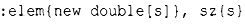

⇐2.2. Структуры 2.4. Объединения⇒
2.3. Классы
У определения данных отдельно от операций над ними есть определенные преимущества, такие как возможность использовать данные произвольным образом. Однако для пользовательского типа необходима более тесная связь между представлением данных и операциями над ними, обеспечивающая все свойства, ожидаемые от "реального типа". В частности, часто тре.буется сохранить представление данных недоступным для пользователей, что упрощает использование типа, гарантирует согласованное использование данных и позволяет внести улучшения в представление позже. Чтобы сделать это, мы должны различать интерфейс типа (который общедоступен) и его реализацию (которая имеет доступ к недоступным иным образом данным). Соответствующий языковый механизм называют классом. У класса есть ряд членов, которые могут быть данными, функциями или членами-типами. Интерфейс определяется открытыми членами класса (объявленными как puЫic), а закрытые (private) члены доступны только через интерфейс. Например:
При этом можно определить переменную нашего нового типа Vector следующим образом:
Графически объект Vector можно представить следующим образом.

В принципе объект Vector является "дескриптором'', содержащим указатель на элементы (elem) и количество элементов (sz). Количество элементов (в примере - 6) может меняться от объекта к объекту Vector, а сам объект в разное время может иметь различное количество элементов (§4.2.3). Однако сам объект Vector всегда имеет один и тот же размер. Это основной способ обработки различного количества информации в С++: дескриптор фиксированного размера, ссылающийся на переменное количество данных "в другом месте" (например, в области памяти, выделенной с помощью оператора new; §4.2.2). Как создавать и использовать такие объекты - основная тема главы 4, "Классы".
Здесь представление вектора (члены elem и sz) доступно только через интерфейс, предоставляемый с помощью открытых членов: Vector (), operator [] () и size().Пример read_and_sum() из §2.2 упрощается:
"Функция"-член с тем же именем, что и имя класса, называется конструктором, т.е. функцией, используемой для конструирования (создания) объектов класса. Таким образом, конструктор Vector () заменяет функцию vector _ ini t () из §2.2. В отличие от обычной функции конструктор гарантированно используется для инициализации объектов своего класса. Таким образом, определение конструктора решает проблему неинициализированных переменных класса.
Vector (int) определяет, как будут создаваться объекты типа Vector. В частности, он указывает, что для этого требуется целое число. Это целое число используется в качестве количества элементов. Конструктор инициализирует члены Vector, используя список инициализаторов членов:
То есть сначала выполняется инициализация elem указателем на память для s элементов типа douЫe, полученную из свободной памяти. Затем выполняется инициализация sz значением s.
Обращение к элементам выполняется с помощью функции индекса, именуемой operator []. Она возвращает ссылку на соответствующий элемент (douЬle&, которая позволяет читать и записывать этот элемент).
Функция size() возвращает пользователям количество хранящихся элементов.
Очевидно, что обработка ошибок здесь полностью отсутствует, но мы вернемся к этому позже, в §3.5. Точно так же мы не предоставляем механизм "возврата" в свободную память массива douЬle, полученного с помощью оператора new; в §4.2.2 показано, как элегантно это сделать с использованием деструктора.
Между структурой и классом нет никакой принципиальной разницы; struct - это просто класс с членами, открытыми (public) по умолчанию. Например, вы можете определить конструкторы и другие функции-члены для структуры.